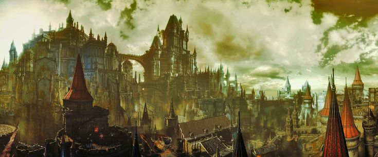

Dark Souls 3

Countless linkings of the first flame have taken their toll. It is clear at this point that linking the fire is just delaying the inevitable and the age of dark will indeed come. Nevertheless that will not stop the powers that be from trying. We now see ourselves in the kingdom of Lothric where the King Oceiros has groomed his youngest son, Prince Lothric to link the fire when the time came. However Lothric rejected this, he saw through the fire linking cycle for what it was and was content to watch the fire fade with his older brother Prince Lorian. Because of this four previous lords of cinder (linkers of the first flame) are resurrected to link the fire once again. Aldrich, Saint of the Deep; Ludleth of Courland; Yhorm the Giant of the Profaned Capital; and The Abyss Watchers of the Undead Legion. All of which excpt Ludleth also refuse to link the flame. Therefore the unkindled are ressurected. The unkindled are humans who previously attempted to link the first flame and failed. They are now ressurected and given a second chance to finish what they started. You are one such unkindled and this is where Dark Souls 3 begins.